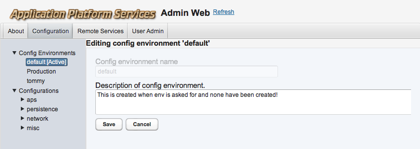
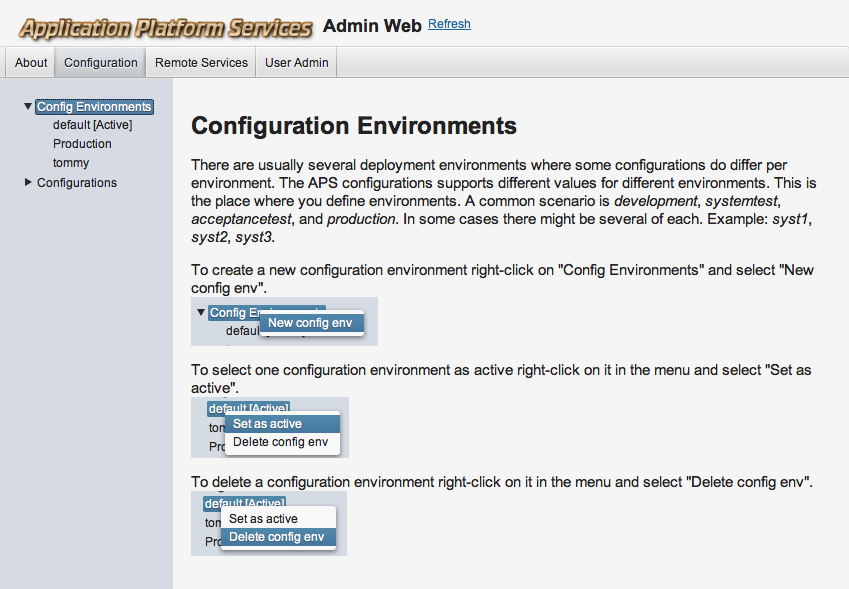
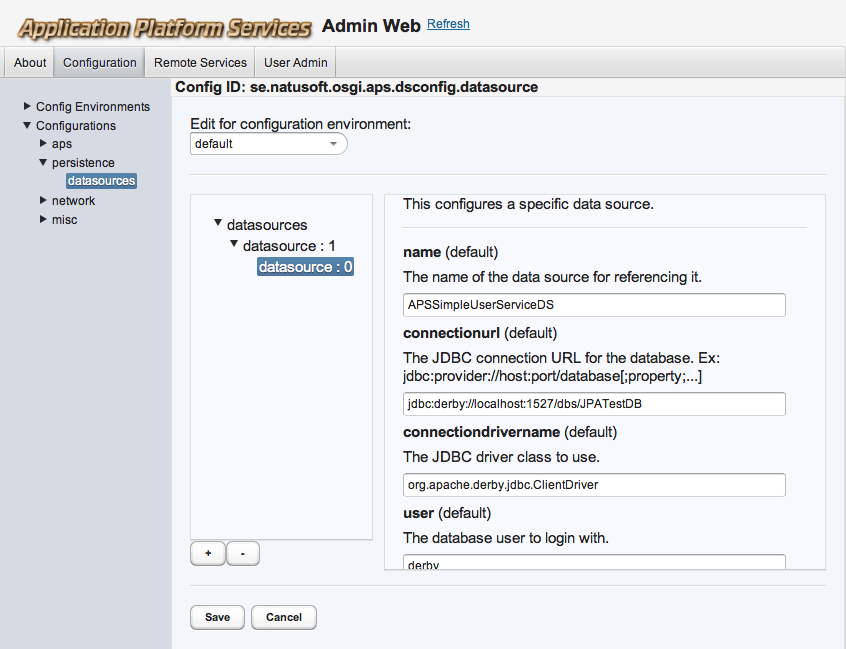

This is not the simple standard OSGi service configurations, but more an application config that can also be used for services. It supports structured configurations including lists of items andlists of subconfigurations. Code that uses the configuration provide one or more configuration classes with config items. These are registered with the config service, which makes them editable/publishable though and admin web app. After registration an instance of the config can be gotten containing published or defaul values. Alternatively the config class is specified with a fully qualified name in the APS-Configs: MANIFEST.MF entry. In this case the configuration service acts as an extender and automatically registers and provides an instance of the config for you, without having to call the config service.
Here is an example:
@APSConfigDescription(
version="1.0",
configId=”se.natusoft.aps.exmple.myconfig”,
group=”examples”,
description=”An example configuration model”
)
public class MyConfig extends APSConfig {
@APSConfigItemDescription(
description=”Example of simple value.”,
)
public APSConfigValue simpleValue;
@APSConfigItemDescription(
description=”Example of list value.”
)
public APSConfigValueList listValue;
@APSConfigItemDescription(
description=”One instance of MySubConfig model.”
)
public MySubConfig mySubConfig;
@APSConfigItemDescription(
description=”Multiple instances of MySubConfig model.”
)
public APSConfigList<MySubConfig> listOfMySubConfigs;
@APSConfigDescription(
version=”1.0”,
configId=”se.natusoft.aps.example.myconfig.mysubconfig”,
description=”Example of a subconfig model. Does not have to be inner class!”
)
public static class MySubConfig extends APSConfig {
@APSConfigItemDescription(
description=”Description of values.”
)
public APSConfigValueList listOfValues;
@APSConfigItemDescription(
description=”Description of another value.”
)
public APSConfigValue anotherValue;
}
}
Now you might be wondering, why not an interface, and why public and why APSConfigValue, APSConfigValueList, and APSConfigList?
The reason for not using an interface and provide a java.lang.reflect.Proxy implementation of it is that OSGi has separate class loaders for each bundle. This means a service cannot proxy an interface provided by another bundle. Well, there are ways to go around that, but I did not want to do that unless that was the only option available. In this case it wasn’t. Therefore I use the above listed APS*Value classes as value containers. They are public so that they can be accessed and set by the APSConfigService. When you get the main config class instance back from the service all values will have valid instances. Each APS*Value has an internal reference to its config value in the internal config store.
All config values are strings! All config values are stored as strings. The APSConfigValue container however have toBoolean(), toDate(), toDouble(), toFloat(), toInt(), toLong(), toByte(), toShort(), and toString() methods on it.
The APSConfigList
public interface APSConfigValueList extends APSConfigList<APSConfigValue> {}
Use APSConfigValue for plain values.
Use APSConfigValueList for a list of plain values.
Use MyConfigModel extends APSConfig for a subconfig model.
Use APSConfigList
The full list of attributes for the annotations are:
@APSConfigDescription(
version="1.0",
configId=”se.natusoft.aps.exmple.myconfig”,
group=”docs.examples”,
description=”An example configuration model”
)
This is an annotation for a configuration model.
version - The version of the config model. This is required.
configId - The unique id of the configuration model. Use same approch as for packages. This is required.
group - This specifies a group or rather a tree branch that the config belongs under. This is only used by the configuration admin web app to render a tree of configuration models. This is optional.
description - This describes the configuration model.
@APSConfigItemDescription(
description=”Example of simple value.”,
datePattern=”yyMMdd”,
environmentSpecific=true/false,
isBoolean=true/false,
validValues={”high”, ”medium”, ”low”},
)
This is an annotation for a configuration item whithin a configuration model.
description - This describes the configuration value. The configuration admin web app uses this to explain the configuration value to the person editing the configuration. This is required.
datePattern - This is a date pattern that will be passed to SimpleDateFormat to convert the date in the string value to a java.util.Date object and is used by the toDate() method of APSConfigValue. This date format will also be displayed in the configuration admin web app to hint at the date format to the person editing the configuration. The configuration admin web app will also use a calendar field if this is available. The calendar field has a complete calendar popup that lets you choose a date. This is optional.
environmentSpecific - This indicates that the config value can have different values depending on which config environment is active. This defaults to false in which case the value will apply to all config environments. This is optional.
isBoolean - This indicates that the config value is of boolean type. This is used by the configuration admin web app to turn this into a checkbox rather than a text field. This defaults to false and is this optional.
validValues - This is an array of strings ( {”...”, ..., ”...”} ) containing the only valid values for this config value. This is used by the configuration admin web app to provide a dropdown menu of the alternatives rather than a text field. This defaults to {} and is thus optional.
It is possible to let the APSConfigService act as an extender and automatically register and setup config instances on bundle deploy by adding the APS-Configs: MANIFEST.MF header and a comma separated list of fully qualified names of config models. Each of these models must also declare a ManagedConfig<ConfigModelType> instance. Example:
@APSConfigDescription(
version="1.0",
configId=”se.natusoft.aps.exmple.myconfig”,
group=”examples”,
description=”An example configuration model”
)
public class MyConfig extends APSConfig {
—> public static final ManagedConfig<MyConfig> managed = new ManagedConfig<MyConfig>(); <—
@APSConfigItemDescription(
description=”Example of simple value.”,
)
public APSConfigValue simpleValue;
@APSConfigItemDescription(
description=”Example of list value.”
)
public APSConfigValueList listValue;
...
There is a possibility that code started in a bundle, especially threads might start running before the config has become managed. In such cases the following will solve that:
if (!MyConfig.managed.isManaged()) {
MyConfig.managed.waitUntilManaged();
}
Do not ever do this during start() of a Bundle activator! That would cause a never ending dead-lock!
To access the managed config do:
MyConfig.managed.get().simpleValue.toString()/toInt()/toDouble()/...
The APSConfigService API looks like this:
public interface APSConfigService {
void registerConfiguration(Class<? extends APSConfig> configClass, boolean forService) throws APSConfigException;
void unregisterConfiguration(Class<? extends APSConfig> configClass);
<Config extends APSConfig> Config getConfiguration(Class<Config> configClass) throws APSConfigException;
}
On bundle start you register the configuration. On bundle stop you unregister it. Inbetween you access it. It is a good idea to call getConfiguration(...) after register on bundle start and the pass this instance to your services, etc.
If the forServices flag is true then this configuration will also be registered in the standard OSGi configuration service. Please be warned however that APSConfigService stores its configuration values in properties files, but with rather complex keys. For non structured, flat configurations it might make some sense to register it with the standard osgi service also, but in most cases there is no point in doing this. I’m not even sure why I have this option!
Please note that if you are using managed configs (see above) then you never need to call this service API, not even lookup/track the APSConfigService!
The APSconfigAdminService only needs to be used if you implement a configuration editor. APSConfigAdminWeb uses this API for example. See the javadoc for the API.
It is quite possible to make config structures of great complexity. DON'T! Even if it seems manageable from a code perspective it might not be that from a admin perspective. Keep it simple always apply!


